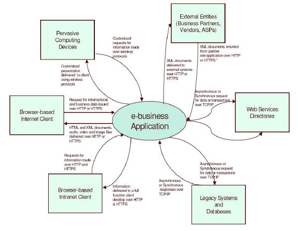
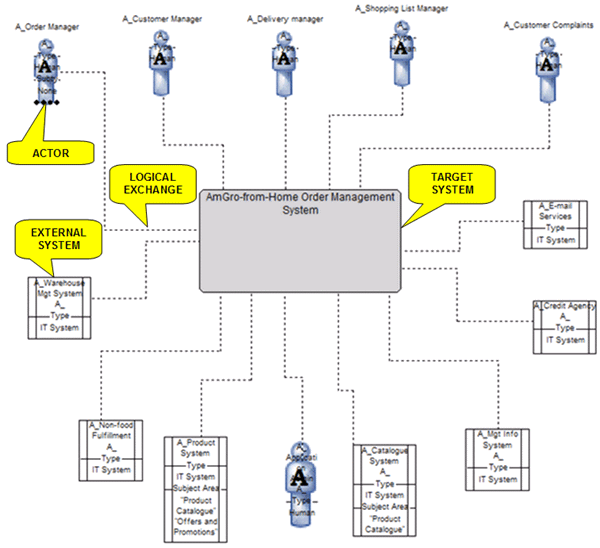

| Example: System Context for Team Solution Design |
 |
|
| Related Elements |
|---|
The System Context may be developed as a free form diagram or as a more formal set of views. The free form System Context Diagram typically consists of the following major parts:
The elements within the target system boundary are those over which the development team and the client have some control. The users and systems outside the boundary of the target system are those which affect the system operation and development but are beyond the direct control of the developers and client. Changes may be required in these systems. The System Context Diagram below illustrates a free form diagram derived from the eBusiness Reference Architecture. 
In more complex situations, it may be helpful to develop more formal views of the system context. These views are based on four viewpoints which reflect various combinations of Functional, Operational, physical and logical. The possible views include:
The following example illustrates the logical functional view. The lines connecting the target system with actors and external systems depict logical "Exchanges". An exchange represents the collection of all interactions across all collaborations between the actor or external system and the target system. In an operational view, these lines represent the access mechanism which connects the actor or external system with the target system and supports the exchange. When creating these formal views, it will be helpful to use a design tool such as the SA4TeamSD configuration of IBM's Rational System Architect. Because of the additional detail in these formal view, it will be more practical to keep the annotation for the elements separate from the view. For more information on developing these formal views, refer to the associated guidance. 
|
| Whitepapers |
|---|
© Copyright IBM Corp. 1987, 2016 All Rights Reserved |